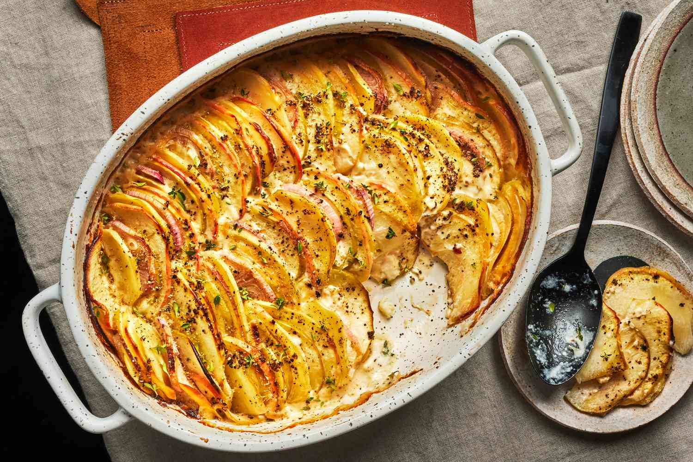

Gratin
Home

Description
Potato gratin (or gratin dauphinois) is a classic French comfort dish featuring thinly sliced potatoes baked in cream with garlic and cheese. The result is tender, creamy layers with a golden, crispy top that makes an elegant side dish for any meal.
Ingrediants
- 2 lbs potatoes (Yukon Gold or Russet), thinly sliced
- 2 cups heavy cream
- 1 cup whole milk
- 3 cloves garlic, minced
- 1 1/2 cups shredded Gruyère cheese (or Swiss cheese)
- 1/2 cup grated Parmesan cheese
- 2 tablespoons butter (for greasing the dish)
- 1 teaspoon salt
- 1/2 teaspoon black pepper
- 1/4 teaspoon nutmeg (optional)
- Fresh thyme (optional)
Steps
- Preheat your oven to 375°F (190°C). Butter a 9x13-inch baking dish generously.
- In a saucepan over medium heat, combine the heavy cream, milk, garlic, salt, pepper, and nutmeg. Heat until it just begins to simmer, then remove from heat.
- Arrange a layer of sliced potatoes in the bottom of the baking dish, slightly overlapping them. Sprinkle with a handful of Gruyère cheese.
- Repeat the layering process with remaining potatoes and cheese, creating 3-4 layers total. Reserve some cheese for the top.
- Pour the warm cream mixture evenly over the potatoes, ensuring it seeps between the layers. Press down gently with a spatula.
- Sprinkle the remaining Gruyère and all of the Parmesan cheese on top.
- Cover the dish with foil and bake for 45 minutes. Remove the foil and bake for another 20-25 minutes until the top is golden brown and bubbly, and the potatoes are tender when pierced with a knife.
- Let the gratin rest for 10 minutes before serving to allow it to set. Garnish with fresh thyme if desired.